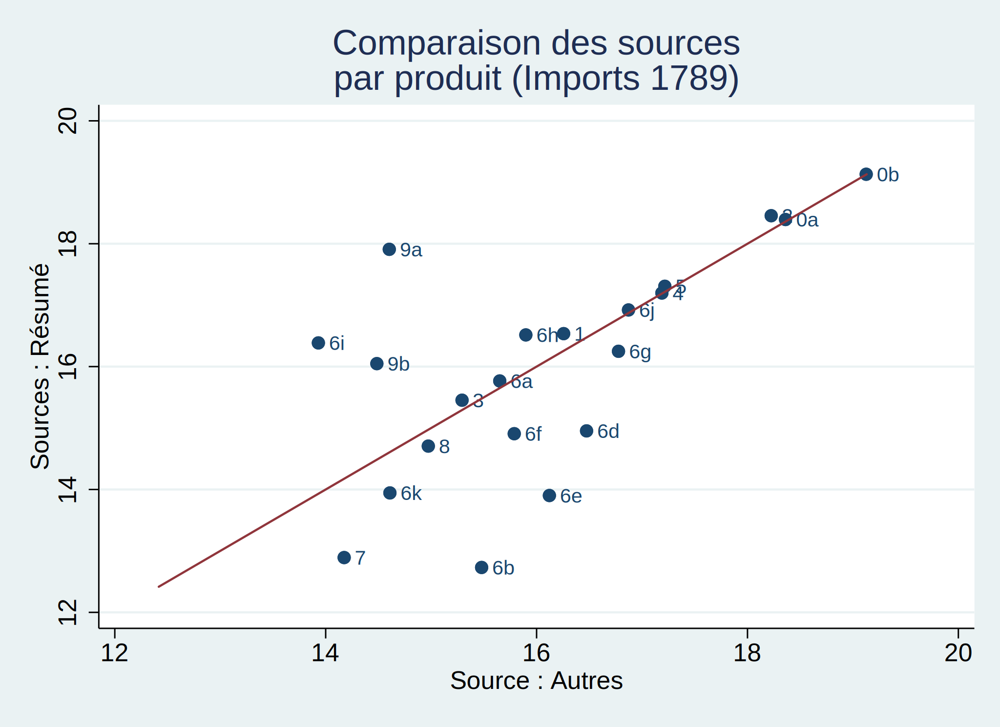
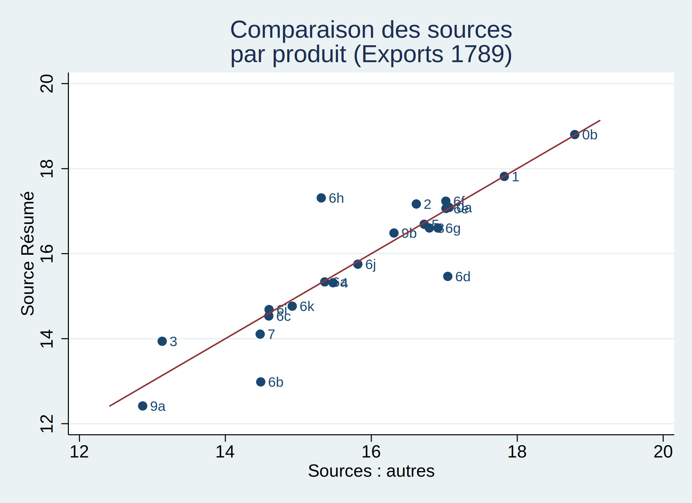
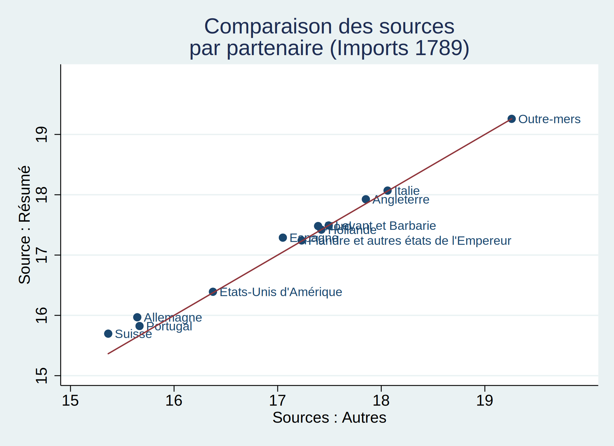
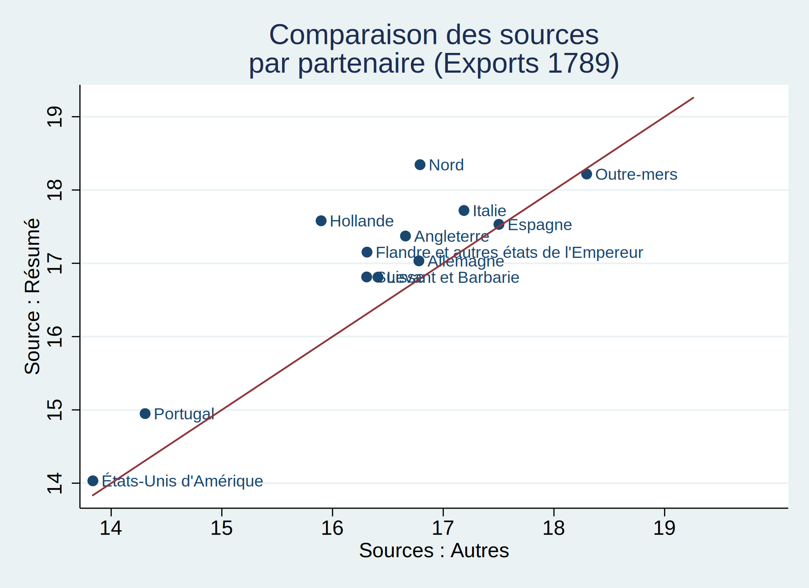
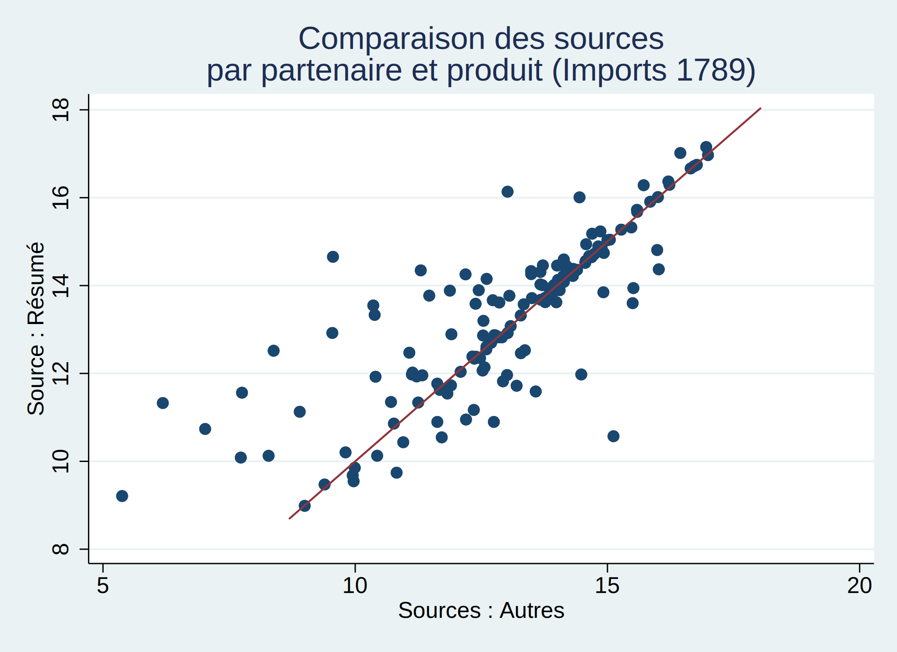
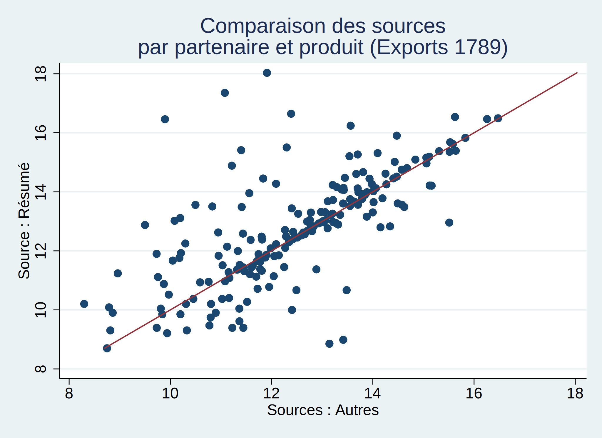

Nous disposons de différentes sources sur les données du commerce au XVIII ème siècle et nous essayons de tester leur robustesse en les comparant entre elles.
Nous tentons d’identifier quels sont les produits pour lesquels les valeurs des exportations/importations diffèrent d’une base de donnée à l’autre. Ceci va nous permettre d’identifier ainsi que de quantifier les erreurs dans la retranscriptions des données concernant la valeurs des exportations et des importations. Pour cela nous comparons les valeurs des exportations et des importations provenant d’une source résumée et celles provenant d’une source non résumées.
Nous nous intéressons uniquement aux observations de l’année 1789 et nous choisissons d’exclure les observations pour lesquels la France est un partenaire commercial.

Nous constatons que les différentes sources ne semblent pas concorder sur la valeur des importations de nombreux produits. Ceci est particulièrement vrai pour les “Monnaies et métaux précieux” ou encore pour les “Produits du bois, liège, jonc”.

Malgré une légère amélioration par rapport aux importations, nous constatons que les différentes sources ne semblent pas concorder sur la valeur des exportations de nombreux produits. Ceci est particulièrement vrai pour les “Filés ou tissés de fibre végétale non mélangés” ou encore pour les “Autres filés ou tissés mélangés de fibre végétales dont toiles”.
Nous tentons d’identifier quels sont les partenaires commerciaux pour lesquels les valeurs des exportations/importations diffèrent d’une base de donnée à l’autre. Ceci va nous permettre d’identifier ainsi que de quantifier les erreurs dans la retranscriptions des données concernant la valeurs des exportations et par importations. Pour cela nous comparons les valeurs des exportations et des importations provenant d’une source résumée et celles provenant d’une source non résumées.
Nous nous intéressons uniquement aux observations de l’année 1789 et nous choisissons d’exclure les observations pour lesquels la France est un partenaire commercial. De plus, nous choisissons d’exclure les observations pour lesquels les produits importés sont des “Monnaies et métaux précieux” puisque ce type de bien ne peut être comptabilisé comme faisant parti des échanges commerciaux entre deux pays.

Nous constatons que les différentes sources ne semblent concorder sur la valeur des importations de nombreux partenaires commerciaux. Néanmoins les données concernant l’Espagne et l’Allemagne semblent être les moins fiables.

Nous constatons que les différentes sources ne semblent pas concorder sur la valeur des exportations de la plupart des partnaires commerciaux. Ceci est particulièrement vrai pour le Nord, la Hollande et la Flandre.
Nous tentons d’identifier quels sont les produits par partenaire commercial pour lesquels les valeurs des exportations/importations diffèrent d’une base de donnée à l’autre. Ceci va nous permettre d’identifier ainsi que de quantifier les erreurs dans la retranscriptions des données concernant la valeurs des exportés et importés. Pour cela nous comparons les valeurs des exportations et des importations provenant d’une source résumée et celles provenant d’une source non résumées.
Nous décidons de nous intéresser uniquement aux observations de l’année 1789 et nous choisissons d’exclure les observations pour lesquels la France est un partenaire commercial.


À présent nous calculons la différence entre les valeurs des produits par partenaire commercial provenant de la source : Résumé et des autres sources. Puis nous établissons un classement des produits par partenaire commercial pour lesquels la différence de valeurs entre les deux sources est la plus élevée.
Produit Partenaire X_ou_M Diff_log
1. Produits agr.. Flandre et a.. Exports 6.56
2. Autres filés.. Suisse Imports 6.38
3. Produits agr.. Hollande Exports 6.28
4. Produits agr.. Nord Exports 6.12
5. Divers mélan.. Levant et Ba.. Imports 5.14
6. Autres filés.. Allemagne Imports 5.10
7. Produits du .. Nord Imports -4.55
8. Filés ou tis.. Hollande Exports -4.43
9. Filés ou tis.. Allemagne Exports -4.29
10. Produits agr.. Italie Exports 4.26
11. Autres filés.. Italie Imports 4.13
12. Produits agr.. Suisse Exports 4.01
13. Autres filés.. Hollande Exports 3.99
14. Cuirs, peaux.. Allemagne Imports 3.81
15. Autres filés.. Espagne Imports 3.71
16. Autres filés.. Angleterre Exports 3.67
17. Produits agr.. Angleterre Exports 3.38
18. Divers mélan.. Suisse Imports 3.37
19. Produits agr.. Levant et Ba.. Exports 3.21
20. Boissons et .. Portugal Imports 3.19
Produit Partenaire X_ou_M diff_value Diff_log
1. Matières bru.. Levant et Ba.. Imports 10,714,049.00 0.57
2. Matières bru.. Angleterre Exports 10,530,236.00 2.68
3. Autres filés.. Angleterre Imports 9,739,391.00 3.12
4. Filés ou tis.. Allemagne Exports 9,108,392.00 0.91
5. Filés ou tis.. Flandre et a.. Imports -7,308,206.00 -1.65
6. Autres filés.. Flandre et a.. Imports 7,015,482.00 1.53
7. Autres filés.. Espagne Exports 6,135,500.50 1.43
8. Filés ou tis.. Angleterre Imports -6,057,200.00 -1.18
9. Matières bru.. Nord Imports 5,105,064.00 0.57
10. Filés ou tis.. Espagne Exports -5,027,228.00 -2.55
11. Matières bru.. Italie Imports 5,004,275.00 0.20
12. Filés ou tis.. Italie Imports -4,585,759.00 -1.90
13. Filés ou tis.. Levant et Ba.. Imports -4,335,740.00 -1.57
14. Produits du .. Nord Imports -3,648,126.75 -4.55
15. Matières bru.. Espagne Exports 3,373,778.25 1.56
16. Matières bru.. Suisse Exports 3,266,736.25 1.67
17. Produits chi.. Nord Exports 3,145,411.25 1.22
18. Autres filés.. Angleterre Exports 2,843,710.00 3.67
19. Boissons et .. Angleterre Exports 2,651,147.00 0.21
20. Filés ou tis.. Espagne Exports -2,361,733.00 -0.95